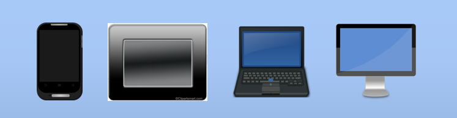

The Cloud and You
By Michael J Rees
Text copyright (c) 2014 Michael J Rees
All Rights Reserved
For Margot for her constant support
I am a retired academic who has spent 40 years teaching and researching computer science. More than 15 years ago I attended the 7th World Wide Web Conference in Brisbane, Australia. I saw a demonstration of a web browser showing a page that allowed the user to edit the page content directly in that browser. I was well and truly hooked.
This was my introduction to what became known as Web 2.0. Later still we called it AJAX after the mix of technology used. Then the marketers started calling it The Cloud. Back in the 1990s though we always drew the Internet as a cloud shape in diagrams. It's not surprising, therefore, that the Cloud has become a metaphor for the Internet.
Today when talking about the Cloud we mean the process by which people access software, computer processing, and files over the Web, instead of on their desktops. Over those more than 15 years I have reveled in the Cloud, using it for both professional purposes and in my everyday life.
As you might guess I use the Cloud for very many things but to give you a flavor my uses include:
When I praise the Cloud to my friends and colleagues I am often asked "What is the Cloud and why is it so useful? I dedcided to answer by creating an online course, from which this ebook has been created. In a couple of hours of your time you will learn about the main features of the Cloud and how you, too, can use it to accomplish everyday tasks.
No matter whether you are an individual, a professional or work for a company, I hope you enjoy what you read here, especially if you complete the practical workshops included in this book. It's all about the Cloud and you.
This course introduces the Cloud and how it relates to you in your everyday life.
Many of us have access to a range of devices such as:
All these devices are capable of connecting to the Cloud to bring us a wide range of facilities as we conduct our daily lives.
Your device you must be connected to the Internet to access the Cloud.
The Cloud features are managed by a very large set of servers numbering in the millions operated by a large range of companies big and small.
Servers are specialized computers containing processors, local memory and fast network adapters to connect them to the Cloud.
For the sake of efficiency large collections of servers are typically housed in data centers.
Software running on the servers provides a large range of useful services to the user devices connected to the Cloud.
Often large, coordinated groups of individual servers work together to provide the Cloud services
Probably the most widely used service today is secure Cloud storage for documents and data of all kinds.
High capacity disk drives are present in very large numbers housed alongside the servers in the data centers to provide this vital Cloud storage service.
Once stored in the Cloud documents and data can be accessed from any device connected to the Internet given the correct security credentials.
The good news is that the large scale of Cloud services and the increasingly convenient access to the Internet has driven down the cost of access.
Enterprise users have been able to access the Cloud for some time, but this course focuses particularly on how individuals, professionals and small businesses can gain benefits from the Cloud.
I look forward to explaining how the Cloud and You can work together.
Now you are familiar with the main Cloud components let's see how to connect with the Cloud. On all the devices mentioned so far you can run a web browser to connect with the vast majority of cloud services.
It's a simple matter of entering the address of the cloud service into your browser's address field.
Remember the Web and the Internet are quite different things
The Internet is a network of networks connecting devices with unique Internet Protocol, IP addresses. It allows data to be exchanged between, say, your smartphone and a Cloud server.
In contrast the Web uses HyperText Transfer Protocol, HTTP, to communicate between the browser on a device and a specialist Web server in the Cloud.
Here we see two of the most popular Cloud storage services, Google Drive and OneDrive from Microsoft. Google Drive is being used on a tablet and OneDrive on a laptop.
Cloud service will usually detect the browser and device and alter the displayed contents accordingly.
To make the interface more convenient many Cloud services provide dedicated apps. On the left is a dedicated smartphone app for OneDrive. On the right we see the same OneDrive account being displayed in a browser on a smartphone.
To enable dedicated apps, most professional Cloud services offer an alternative to browser access called an API or Application Programming Interface. This is an acronym you will see often in connection with the Cloud. An API is used by apps running on a device to access the specific Cloud service. All apps that share data between devices or other users will make use of the Cloud, and as such can be called Cloud apps.
Of course where data and files are shared there is the need for an access authorization system. Typically a user name and password security system is used to grant you access to your Cloud data, and for you to control data sharing, if needed.
In summary, connecting to the Cloud is as simple as typing an address into a browser or running a special app on your device. A system of user names and passwords makes access to the Cloud secure.